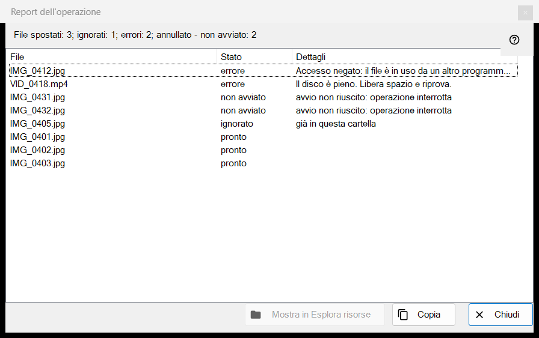
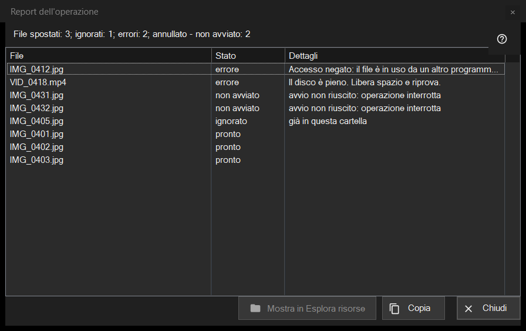

Report dell'operazione
Scopo
Elenca che cosa è successo a ogni file dell'ultima operazione multipla (spostamento, copia, eliminazione o annullamento) e perché qualcosa è stato saltato o è fallito. Non si apre mai da solo: fai clic sulla riga del report in fondo al pannello miniature (F3) dopo un'esecuzione. Se l'esecuzione non è stata pulita, la riga termina con «fai clic per i dettagli».


In questo ordine
- Esegui un'operazione su più file nel pannello miniature.
- Leggi la riga di riepilogo in fondo al pannello.
- Fai clic sulla riga per aprire questa finestra.
- Guarda in cima all'elenco: i fallimenti vengono per primi.
- Seleziona delle righe, poi usa «Copia» per prendere i loro percorsi o «Mostra in Esplora file» per trovare un file.
Gli elementi
La riga di riepilogo
La riga inizia con il risultato: «File spostati: 5», «File copiati: 5», «File eliminati: 5», «File ripristinati: 5» o «Operazioni completate: 5». Altre parti, ciascuna con il suo numero, compaiono solo quando il numero non è zero: «ignorati», «errori», «operazioni non annullabili», «eliminati definitivamente, impossibile ripristinare» e, quando l'esecuzione si ferma in anticipo, «interrotto, nessuna connessione alla cartella - non avviato» (tre connessioni fallite di fila la fermano) o «annullato - non avviato».
L'elenco
Colonne: File, Stato e Dettagli. Le righe peggiori vengono per prime: fallite, poi non avviate, poi saltate, poi completate; all'interno di un gruppo i file mantengono l'ordine dell'esecuzione. Il suggerimento di una riga mostra il percorso completo. I dettagli danno un motivo semplice per un fallimento, la cartella di destinazione per un file completato, «salvato come» e il nuovo nome quando il vecchio era già occupato, e «Eliminato definitivamente - annullamento non disponibile» per un'eliminazione che ha saltato il Cestino.
Stati e motivi di salto
Stati: «pronto», «Errore», «ignorato», «non avviato». Un file saltato dice perché: «già in questa cartella», «il file non è più sul disco», «i file all'interno dell'archivio non vengono modificati», «lo stesso nome esiste già tra i file selezionati», «la risorsa è di sola lettura», «questo è lo stesso file» o «nome già in uso nella cartella di destinazione». Un file non avviato dice «avvio non riuscito: operazione interrotta».
Mostra in Esplora file, Copia, Chiudi
«Mostra in Esplora file» è attivo quando una riga è selezionata; apre una finestra della cartella con il primo file selezionato evidenziato, o la cartella se il file è stato spostato. «Copia» (anche Ctrl+C) mette negli appunti i percorsi completi delle righe selezionate, uno per riga, o di tutte le righe se nessuna è selezionata: un modo rapido per passare l'elenco dei file problematici. «Chiudi» termina il report.